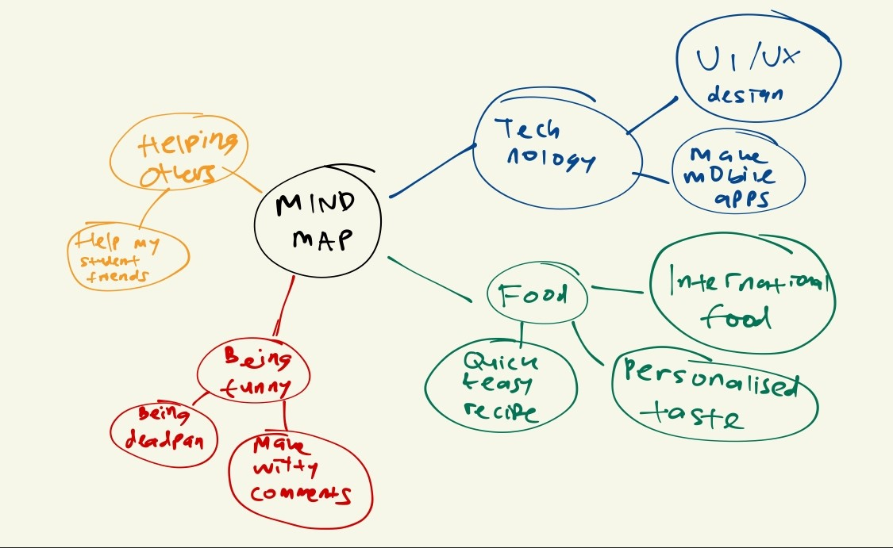
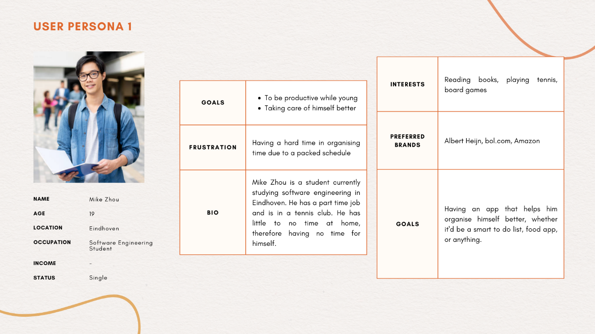
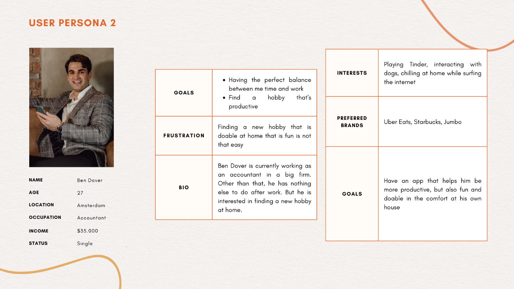
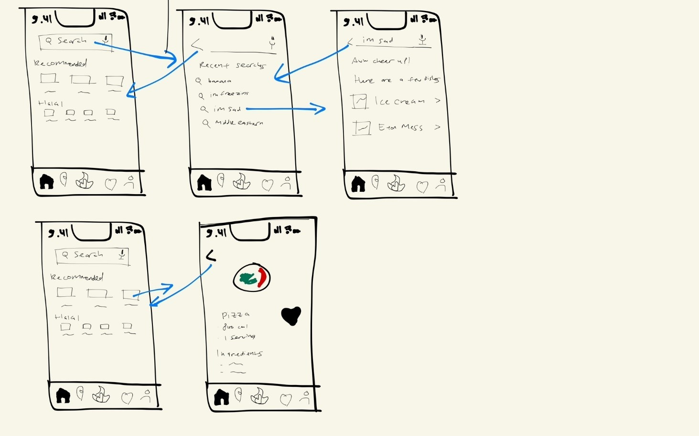
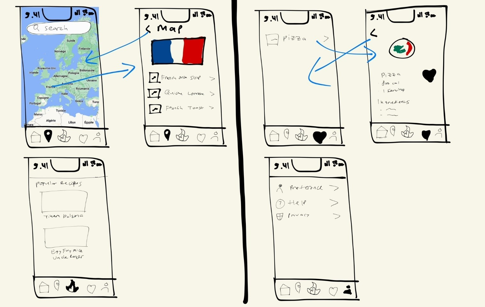
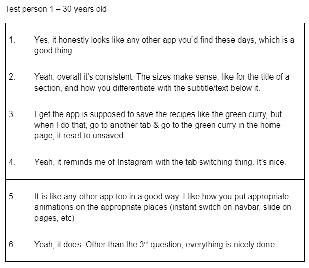
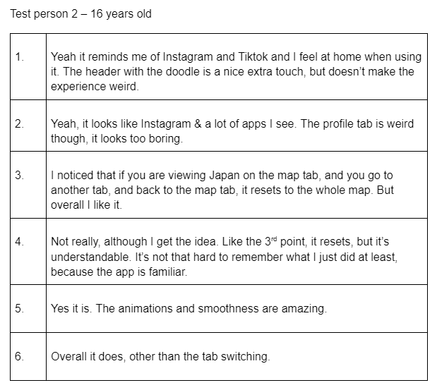
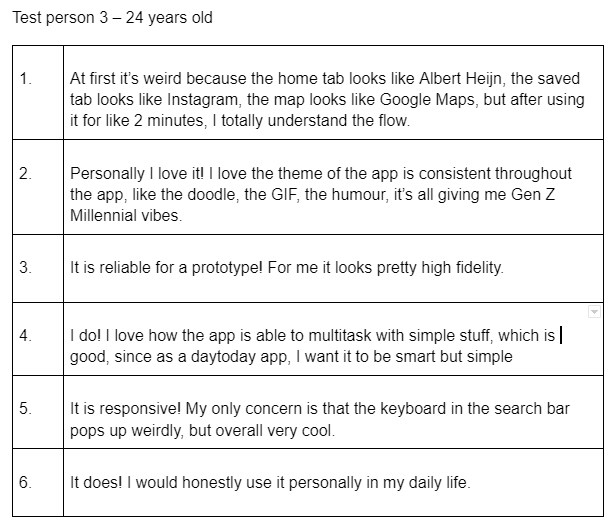

I have always liked cooking and cuisine all around the world since a young age. Growing up in Indonesia, I’ve been privileged to try some of the world’s arguably best foods. My mom used to say that if you cannot travel abroad, eat their food; the taste of their food will take you to their country in the comfort of your own house. This passion and principle have helped me shape the way I am today; how I am going out of my comfort zone and trying something new and foreign.
Another thing that drove me to do this project is that as a student myself, I wanted to help my friends, people my age, and especially myself to discover foods catered to us. I am confident that with my skill and eagerness, I will design an app that would be highly usable.
This smart food app will be called Sacred Blue, derived from the French phrase sacre bleu!, which is an expression as a cry of surprise; basically the French version of Oh My Word!, which is sort of the vibe I’m looking for (not too serious and humorous). I picked this French phrase because France is closely related to the world of culinary.
RESEARCH
Mind Map
To help me gather and organise my thoughts and the things I'm passionate at clearly, I first created a mind map. It also enabled me to see that these things that I thought of can be combined to create one thing.

Target Demographics
I did my research on my target audience/demographics to know who I should market my product to. I concluded that the people I’m focusing on is people aged like me; Gen Z and Millennials, aged 11-26 and 27-42 respectively. There are a few reasons why:
When scrolling through TikTok and Twitter, I found that Gen Z and Millennials tend to be way more relaxed and playful than the other generations; often times you’d find the admin of big corporations writing cheeky comments that Gen Z and Millennials would respond to. (Examples: Wendy’s Twitter account, Lotus’s TikTok admin, Duolingo, Microsoft, and many more). I wanted to create an app that appeals to their humor.
Most apps these days look similar to one another, like Tinder, Duolingo, bol.com, et cetera. These apps have a lot of design cues that appeal to younger people (For example, bol has cartoon like animations when your shopping cart is empty which is a Gen Z thing). These apps are mainly used by my target audience.
Personally, I specifically want to help Gen Z and Millennials with food, because I too am in that position. Most of us are in college, school, or just started adjusting to adulthood, and has little to no time to organise what they’re going to eat that day.
You might noticed that gender won’t be a deciding factor. Yes, a lot of articles on the internet stated that men and women tend to have different preferences (some stated that men eats more protein, meat, bread while women consumes more fruit, yogurt, vegetables, etc).
Link 1 - “As it turned out, the waiter had it right: there are gender differences in food selection. Men eat more meat and bread, while women consume more fruit, yogurt and diet soda. There are also gender differences in eating styles. Women take smaller bites and take longer to eat than men.”
Link 2 - “Women in this population-based study of residents in Sweden were more likely than men to avoid eating gluten, red meat, white flour and food additives due to perceived unhealthiness, and reported more diet and health related anxiety”
However, there are also some articles that stated otherwise:
Link 1 - This article talks about gender beliefs & what each gender should eat
Link 2 - This article by Cambridge (yes, THAT Cambridge) stated that there are no difference between the sexes in foods such as fruits, nuts, cereals, biscuits, dairy produce, pork, poultry, meat, some fish and some cheese. The major difference was that women rated vegetables higher than did men, while men rated potatoes higher than did women. The ‘menu of choice’ was very similar for the two sexes, with a greater emphasis on salads by the women. Basically, little to no difference.
Through my gender research above, I concluded that gender won't play a role in catering recipes to my users.
Survey
I held an anonymous survey of 15 people aged 17-35 and find out their struggles. There are 4 questions:
Do you have a hard time finding foods catered to you?
Do you use your phone to browse for recipes or just use your own imagination?
Do you want to discover foods that you’ve never heard of before?
Do you want to know how to make popular & trending foods on the internet properly?
The results are as such:
For the first question, 9 said yes. Just like what I thought and experienced, these people said that they are too busy doing their homework/project/work, and have no time to focus on finding the right food for them. So, they ended up making instant noodles or bad quality foods. One even stated that during their time in college, they ended up eating the ready to go meals from supermarkets every day, and they added that it wasn’t a pleasant experience.
For the second question, 8 said yes. However, 5 people were on the fence; they stated that it’s more like don’t know what recipes to start with, and they ultimately got overwhelmed by the choice (or lack thereof) of food recipes. At the end, they give up trying to follow one specific recipe and just use whatever they have.
For the third question, 10 people said yes. 6 out of 10 elaborated that if they have the time, they would research more recipes from other countries & such, but they cannot. Also, finding recipes that adhere to the original culture is difficult, such as Asian cuisine (look how Jamie Oliver messed all Asian dishes up).
For the final question, 8 out of 15 people said yes. They were mostly curious on why these foods are trending and want to know if the food lives up to the hype. Additionally, just like the reasons stated before, they would make some of those trending recipes, but they don’t know the exact duration to make those and the ingredients. This makes sense, considering a recipe developed by/on the internet usually don’t have a specific recipe. At the end, they were discouraged to try them even if they wanted to.
Personas
To get a firmer grasp and understanding of the need of my stakeholder and other people & potential users, I decided to create 2 personas (one for a student, one for someone who just started working). This persona is based on the research I did above.


Competitive Analysis
I used competitive analysis because I want to discover user experiences and interfaces that big companies that succeed used on their apps. I analysed countless and vastly different apps, ranging from Instagram, Hello Fresh, Too Good to Go, and Albert Heijn to Google Maps & Earth, Clubhouse, Tinder, etc. These are apps a lot of people use, and as different as they are to one another, I discovered that there are actually more similarities than I initially thought between these apps. This helped me realised that to build my app, users have to feel familiar with my app, especially when I want my users to use my app on a daily basis. You will find that I take a lot of design cues from these apps later.
Also, I focused more on apps like Hello Fresh and Albert Heijn because those are the most related to my app.
For Hello Fresh, they’re a meal kit company that sends fresh ingredients to their customers who will cook the meal using recipe cards. However, after trying out Hello Fresh for a while, I found that while they do have preferences you can set to personalise your foods, they don’t exclusively have gluten- or allergen-free meal options. Also, your preferences can only go so far, as there are only preferences like “mostly meat, veggie, family, quick cook, calorie smart, and pescatarian”. They don’t have really specific diets like keto, halal if you’re Muslim, etc. But then again, they’re a meal kit company, while my app won’t charge you money, and only recommends you meals, not send you ingredients.
In the case of Albert Heijn’s app, they recommend you recipes based on the ingredients available on the supermarket. That is great if you mainly shop at Albert Heijn, but there are some issues. Because this is an app for the supermarket, you can’t really set your preferences specifically, not to the extent of even Hello Fresh. There’s also the fact that recipes there don’t adhere exactly to the original recipe. One example is Pasta Carbonara voor 1 in their app. When you read the recipe, you’d find that they use Parmesan instead of Pecorino / at least Parmigiano Reggiano, and they use smoked strips of bacon instead of Guanciale / at least Pancetta. I understand they substitute those ingredients because Albert Heijn doesn’t sell Pecorino and Guanciale, but at the same time, if an Italian finds out that recipe, they’d probably pass out on the spot. Also, remember, Albert Heijn’s app is a supermarket app that is able to find you recipes based on what they sell.
In conclusion, this research helped me find my Unique Selling Point: my app is dedicated to finding recipes that you’d like, trending recipes from sources like YouTube(rs), TikTok, famous people, etc, and a world map that lets you freely search for recipes based on a country. I found that there’s not really a super app like mine in the App store, which is great because I have little to no competition, but because this is a really new thing, this might not work in the existing market. According to the Ansoff Matrix, my app is categorised as Product Development (focuses on introducing new products to an existing market).
REALISING THE PRODUCT
Wireframes
I drew some wireframes to get myself acquainted with the future product I'm going to create.


User Stories
I created some user stories to help me get a general explanation of my app coming from the perspective of end users.
As a user I want the app to show me recipes catered to my tastes so that I know the recipes I want to make.
As a user I want the app be able to recognise abstract things like the weather, my mood, etc. so that I can make recipes that is suitable for the occasion.
As a user I want the app to show me the world’s map so that I can find out about other cultures’ local foods.
As a user I want the app to know the recipe of trending foods right now so that I can see whether it’s worth the hype or not.
As a user I want the app to save multiple recipes so that I can make them next time.
As a user I want to know the difficulty and duration of making a recipe so that I know how long & hard I need to work on the recipe.
These user stories help me understand what users might want in my app & empathise the things they need, as well as knowing the little features that they might not appreciate until it’s there. With these stories in mind, it’s time to make the prototype.
Prototype
I used Figma to realise my wireframes & sketches into a high-fidelity prototype.
TESTING
Usability Testing
According to the book Human Computer Interaction by Alan Dix, there are 3 main UI UX design / usability principles: Learnability, Flexibility, and Robustness. These 3 pillars make or break your product. Why? Because:
Learnability: the ease with which new users can begin effective interaction and achieve maximum performance
Flexibility: the multiplicity of ways in which the user and the system exchange information
Robustness: the level of support provided to the user in determining successful achievement and assessment of goals
Hence, I form 7 questions based on these principles.
Are you familiar with the interface overall? Do you have a hard time adjusting yourself to the app? (Learnability)
Is the design of the prototype consistent throughout all the tabs? (Learnability)
Is the prototype reliable (something changes when you do something, like saving recipe, etc)? (Flexibility)
Can you multitask in the prototype? (Flexibility)
Is the prototype responsive enough? (Robustness)
Does the prototype perform as expected? (Robustness)
Results
I conducted a usability testing from a sample of 10 people aged 15-35 based on these 3 principles. I told them to download Figma and use the app for 1-2 days. Here are 3 randomly picked Q&A sessions.



Relating to the user stories:
For the first user story, everyone said that the app really caters to the users’ taste and have no complaints on that.
For the second, overall people are impressed with the search function of the app (some found it hilarious that when searching break up, it shows wedding soup, and they know it’s intentional)
For the third, people really like this idea; they said it’s creative & familiar with Google Maps. However, test person 2 mentioned that the tab shouldn’t reset to the world map when they switch to another tab and back to maps. This issue is inevitable, as this is just a prototype.
For the fourth, people & especially test person 1 mentioned they like that addition. But they mentioned that it’d be nice if we can see the videos of those trending recipes, since they are usually taken in the form of a video.
For the fifth, people sort of expect that they’d be able to save the recipes, and it’s nice that I didn’t forget to add the saved tab. However, test person 2 mentioned that it’s nicer if we can save AND plan recipes.
For the last story, everyone appreciate the difficulty & duration & other extra info for each recipe so they know what to expect while cooking. But test person 3 made a good point; they said it’s better if we put the amount of nutrition on the recipes too (alludes to what my stakeholder mentioned as well).
In conclusion, I’d say that my current design/prototype scored high on learnability, flexibility, and robustness from the perspective of a Gen Z & a Millennial. I am very happy with the results I got from the testing, but with this testing, I am also grateful that I got some feedbacks on what to add & improve to make the app better & more unique.